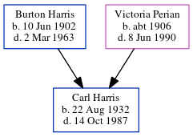

Carl V Harris 1932 - 1987
[ Home ] | [ Calendar ] | [ Surnames Index ] | [ Census Index ] | [ Family History ]The 4th of 6 children of Burton Harris (a truck driver) and Victoria Perian, Carl Harris, the fifth cousin once-removed on the mother's side of Nigel Horne, was born in Indiana, USA on Aug 22, 19321,2,3.
During his life, he was living at 2318 Curdes Avenue, Fort Wayne, Allen, Indiana in 1939 and on Apr 12, 19402.
He died on Oct 14, 1987 in Fort Wayne, Allen, Indiana1,3.
Parents
- Burton Franklin was born on Jun 10, 1902
- Victoria Betty was born c. 1906
Citations
- Social Security Death Index - Findmypast
- US Census 1940 - Findmypast (was age 7 and the son of the head of the household)
- United States Obituary Notices - Findmypast
Media
US Census 1940 - USC/1940/1456354968
United States Obituary Notices - US/TRIB/035230358
Social Security Death Index - USBMD/SSDI/308285178
Family Tree
Generated by ged2site. Last updated on Jun 11, 2024